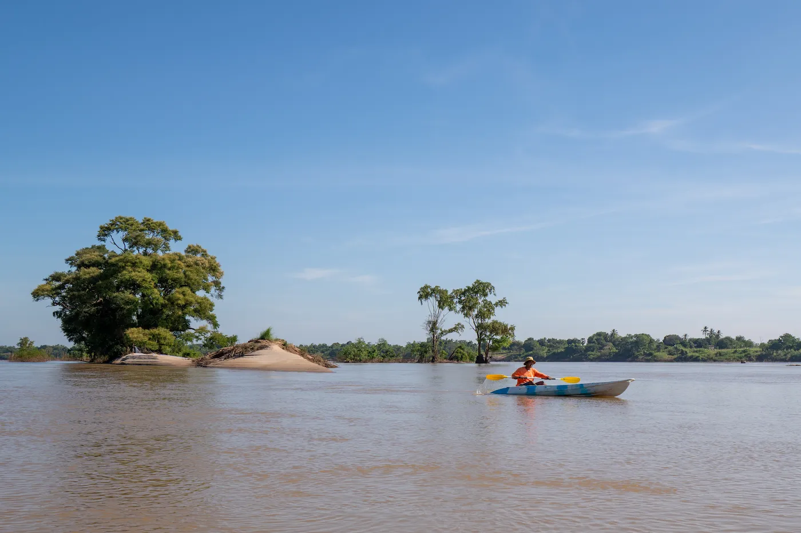
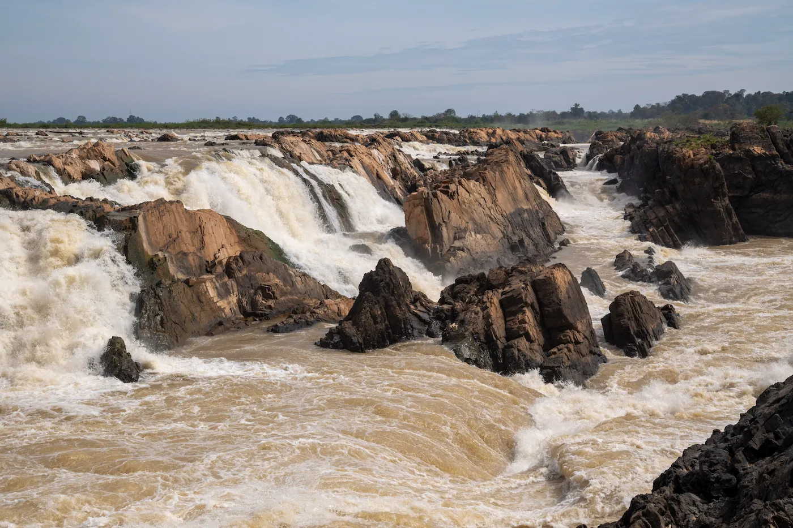
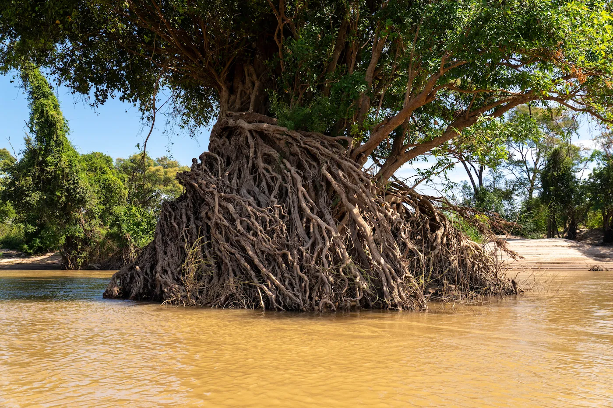

April 2026
Why Stung Treng Should Be on Every Cambodia Itinerary
Most travellers rush through Stung Treng on their way to Laos without stopping. Here's why that's one of the biggest mistakes you can make in Cambodia — and what you're missing.
Read More →
NatureMarch 2026
Inside the Mekong Flooded Forests — One of Southeast Asia's Hidden Wonders
A submerged jungle, still water, and complete silence. The flooded forests north of Stung Treng are unlike anything else in the region.
Read More →
Travel TipsFebruary 2026
The Best Time to Visit Stung Treng — Dry Season vs Wet Season
Both seasons offer something extraordinary. Here's an honest breakdown of what to expect month by month, and which season suits your travel style.
Read More →
Getting HereJanuary 2026
How to Get to Stung Treng — From Phnom Penh, Siem Reap, Kratie & Laos
Stung Treng is more accessible than most people think. A complete guide to every route — bus, minivan, and border crossing from Laos.
Read More → Food & Culture
Food & Culture
December 2025
Eating in Stung Treng — A Local Guide to Khmer Food on the Mekong
From river fish amok to morning noodle soup at the market — what to eat, where to find it, and why Cambodian riverside food is some of the best in Southeast Asia.
Read More →